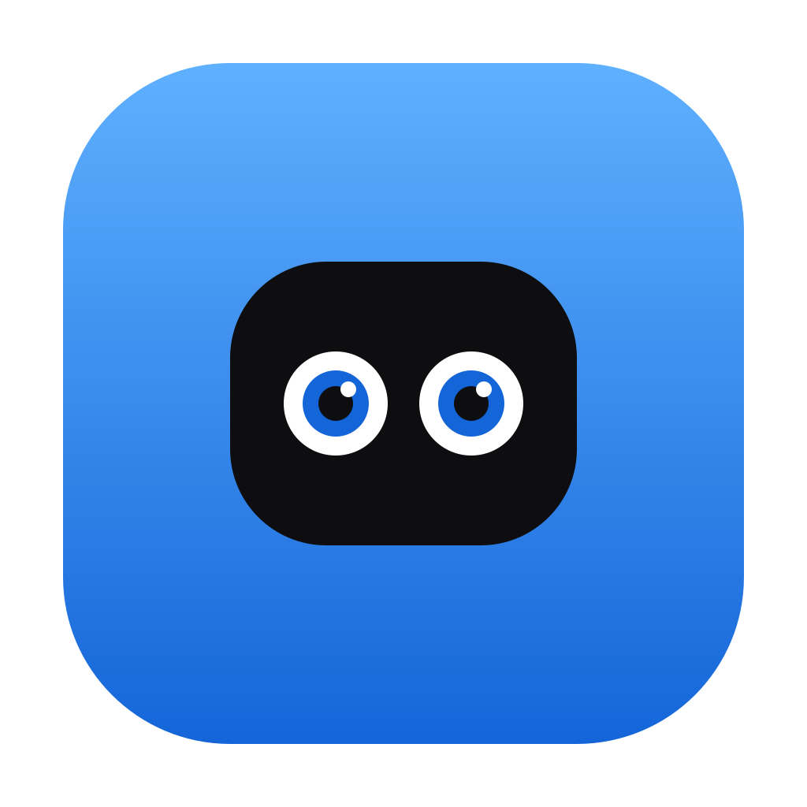
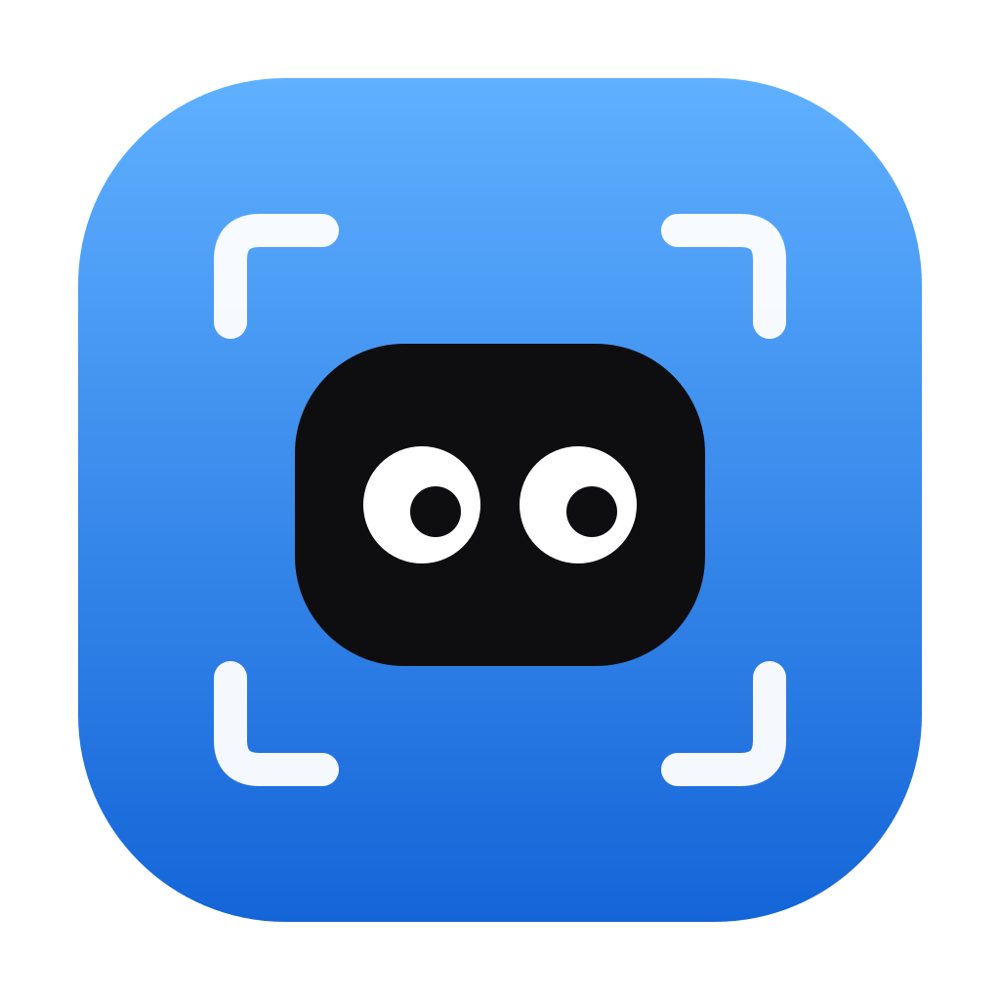
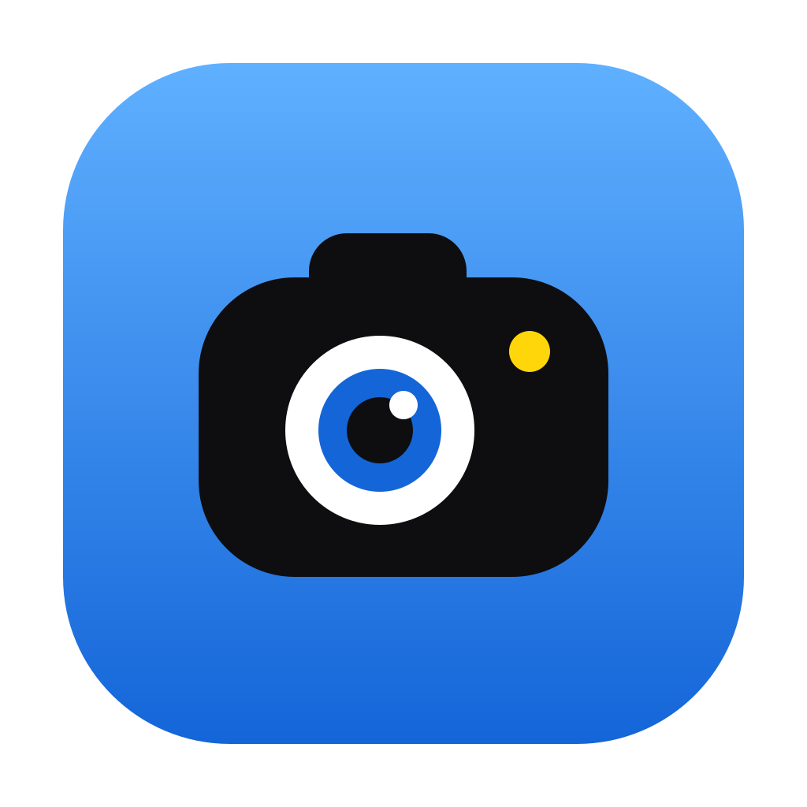

Même famille que Cubby — fond bleu, mascotte noire aux gros yeux

La tête Cubby exacte, mais les yeux sont des lentilles d'appareil photo. Le plus proche cousin de Cubby.

La tête Cubby classique entourée de coins de viseur — la mascotte « visée » comme une capture.

La mascotte devient un petit appareil : bosse viseur, grand œil-objectif googly, flash jaune.